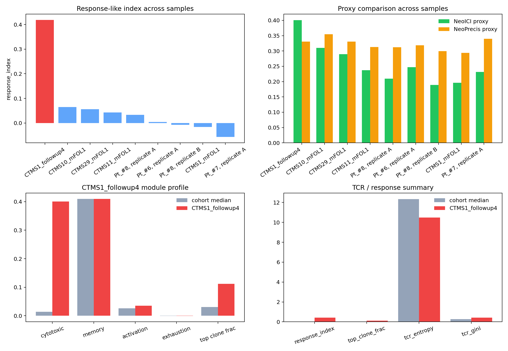

This sample is the strongest open combo replay lane. It carries the highest response-like index and the highest NeoICI-style proxy, while the NeoPrecis-style proxy lands lower. The figure decomposes the sample into cohort-relative module behavior and TCR summary terms.

# CTMS1_followup4 case study - Response-like index: 0.4187 - NeoICI-style proxy rank: 1/9 - NeoPrecis-style proxy rank: 4/9 - Top clone fraction: 0.1123 - TCR clonotypes: 5824 - TCR entropy: 10.4897 - TCR Gini: 0.4326 Interpretation: - This sample is the clearest positive replay lane in the open combo cohorts. - The NeoICI proxy rises with the response-like phenotype more cleanly than the clonality-heavy proxy on this sample set. - The plot is for explanation only; it is not a clinical or prospective validation claim.